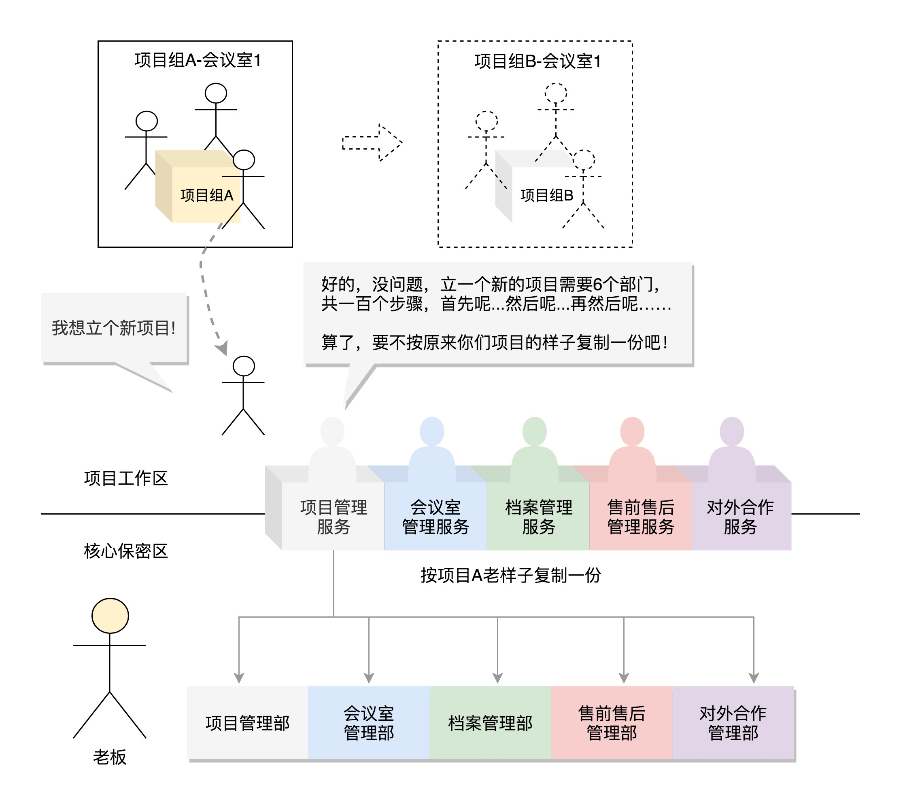
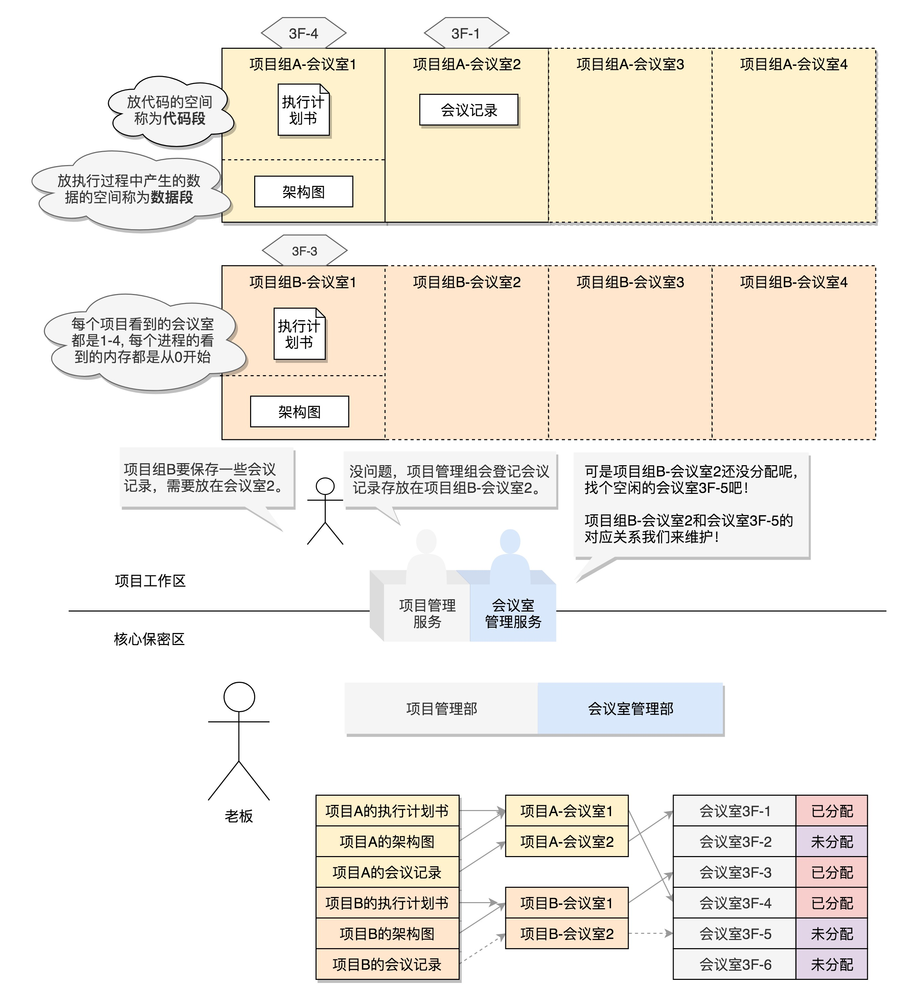
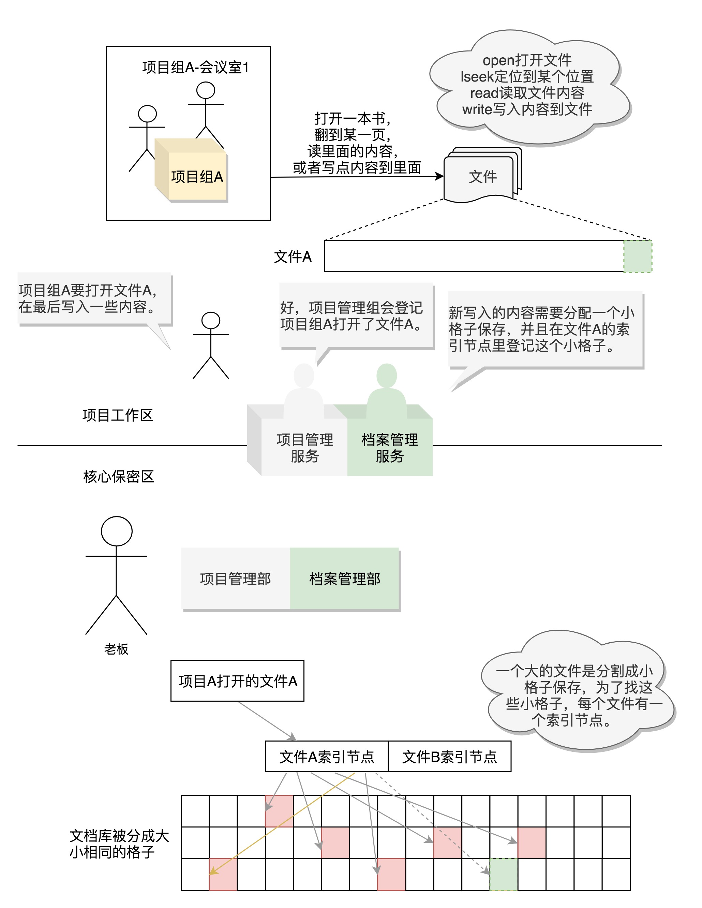

趣谈Linux操作系统3-5：概述、命令、系统调用
文章目录
03-你可以把Linux内核当成一家软件外包公司的老板
操作系统其实就像一个软件外包公司，其内核就相当于这家外包公司的老板。所以接下来的整个课程中，请你将自己的角色切换成这家软件外包公司的老板，设身处地地去理解操作系统是如何协调各种资源，帮客户做成事情的。
- 下图是操作系统和外包公司的比喻

- 下图是操作系统内核体系结构图

04-快速上手几个Linux命令：每家公司都有自己的黑话
用户和密码
- 创建用户用
useradd（实际上用adduser更方便），passwd改密码 - 用
-h参数查看help，用man查看详细手册 - 用户的信息放在
/etc/passwd中，组的信息放在/etc/group中，可用cat输出其内容 - 例子：用cat查看/etc/passwd和/etc/group
|
|
浏览文件
cd是change directory，ls是list- 例子：ls -l的内容
|
|
- 可用
chmod来改变文件权限，chown改变所属用户，chgrp改变所属组 - 管道
|可将左侧程序的输出作为右侧程序的输入 grep用于搜索字符串，支持正则表达式
安装软件
- centos和ubuntu管理软件的区别：
- centos的安装包是
.rpm，用rpm -i安装，rpm -qa查看软件列表，rpm -e删除软件 - ubuntu的安装包是
.deb，用dpkg -i安装，dpkg -l查看软件列表，dpkg -r删除软件 - centos的包管理工具是
yum，yum search搜索软件，yum install安装软件，yum erase卸载软件 - ubuntu的包管理工具是
apt-get，apt-cache search搜索软件，apt-get install安装软件，apt-get purge卸载软件 - centos的源在
/etc/yum.repos.d/CentOS-Base.repo中配置 - ubuntu的源在
/etc/apt/sources.list中配置
- centos的安装包是
- linux的可执行文件放在
/usr/bin或/usr/sbin，其他库文件放在/var，配置文件放在/etc wget用于下载文件tar和unzip用于解压文件
运行程序
- 可用
export配置环境变量，但仅在当前命令行会话中有效 - 用户目录下的
.bashrc在每次用户登录时都运行，其中设置的环境变量自动加载 vim可编辑文件- linux执行程序的3种方式：
- shell在交互命令行里运行，或者把路径放到PATH里，或者显式指定路径
- nouhp和&实现后台运行，通常和重定位结合：
nohup command >out.file 2>&1 &将标准错误(2)合并到标准输出(1)，重定位到out.file - 以服务方式运行：
systemctl start启动，systemctl enable开机启动。程序被设为服务时会在/lib/systemd/system创建配置文件XXX.service
- 关闭后台进程：
ps -ef |grep 关键字 |awk '{print $2}'|xargs kill -9。ps打印进程列表，grep选出所需行，awk打印第二列的PID，kill向这些进程发送信号 shutdown -h now现在关机，reboot重启
总结
- 下图是一些基本的Linux命令行

05-学会几个系统调用：咱们公司能接哪些类型的项目？
立项服务与进程管理
fork系统调用创建进程，叫fork的原因是通过复制父进程来创建子进程。- 当父进程调用fork创建进程时，子进程将各个子系统为父进程创建的数据结构都拷贝一份，程序代码也拷贝了一份
- 下图说明fork产生的子进程拷贝各个子系统为父进程创建的数据结构 
- fork产生子进程后，父进程仍做原来的事，子进程调用
execve来执行另一个任务（否则它们将没有区别），即产生新的分支 - 下图说明fork产生子进程时
先拷贝后修改
- 系统启动时先创建一个所有进程的父进程，所有进程都由它fork而来
- 父进程可用
waitpid来得知子进程是否结束
会议室管理与内存管理
- 每个进程有独立的
内存空间，存放代码段、数据段等 - 数据段分为静态内存、
栈内存、堆内存- 静态内存只在程序执行完才销毁
栈内存存放局部变量，在当前函数执行时起作用，执行完就销毁堆内存动态分配，会保持较长时间，手动销毁才被释放
- 进程的内存空间很大，32位机是4G，64位机更大。因此进程只在有需要的时候才会使用内存管理的系统调用来申请空间。但申请了不一定就分配
物理内存，只有真正写入数据时发现没有对应的物理内存，才会触发中断分配物理内存 - 下图说明进程申请内存空间和物理内存的分配 
- 分配内存数量少时用
brk，分配的内存会和原来的堆数据连在一起。 - 分配内存数量大时用
mmap，重新划分一块区域。
档案库管理与文件管理
- 对于文件的操作，下面这6个系统调用是最重要的：
- 对于已有的文件，可使用
open打开，close关闭 - 对于没有的文件，可使用
creat创建文件 - 打开文件后，可使用
lseek跳到文件的某个位置 - 可对文件的内容读写，读是
read，写是write
- 对于已有的文件，可使用
- linux里
一切皆文件，例如：- 启动进程需要的程序文件是二进制文件。
- 配置文件和日志文件是文本文件。
- 在命令行上打印也是一个文件，是标准输出stdout文件。
- 一个进程的输出可以作为另一个进程的输入，这种方式称为管道，管道也是文件。
- 进程可以通过网络和其他进程进行通信，建立的Socket也是文件。
- 进程需要访问外部设备，设备也是文件。
- 目录也是文件。
- 进程运行起来会在/proc下面有对应的进程号，也一系列文件。
- 对于每个文件，Linux分配一个文件描述符，它是一个整数。
- 下图说明一些文件操作和文件底层的保存 
项目异常处理与信号处理
- 遇到异常时需要向进程发送
信号，例如：- 执行程序时，在键盘输入“CTRL+C”，这是中断信号，正在执行的命令会中止退出
- 非法访问内存
- 硬件故障
- 用户进程通过
kill函数，将一个用户信号发送给另一个进程
- 对于不严重的信号可以忽略，但对于
SIGKILL（用于终止一个进程的信号）和SIGSTOP（用于中止一个进程的信号）不可忽略。 - 每种信号定义了默认动作，例如硬件故障默认终止。也可通过
sigaction系统调用来注册一个信号处理函数来处理
项目组间沟通与进程间通信
- 进程间发送少量数据可用
消息队列。 - 用
msgget创建新队列，msgsnd将消息发送到队列，msgrcv从队列中取消息 - 进程间大量数据交互可用
共享内存。 - 用
shmget创建共享内存块，shmat将共享内存映射到自己的内存空间 - 多进程共享内存时存在竞争问题，可用
信号量Semaphore来保证不同进程排他地访问共享内存 - 对于只允许一个进程访问的资源，可将信号量设为1。进程要访问时调用
sem_wait，若无人访问则占用信号量，若有人访问则等待直到它结束访问。结束访问时用sem_post释放信号量
公司间沟通与网络通信
- 不同机器通过网络通信，要遵循相同的
网络协议，即TCP/IP协议栈 - Linux内核里有网络协议栈的实现，网络服务是通过
套接字Socket来提供服务的（socket有“插口”的含义） - Socket系统调用建立一个Socket。Socket也是一个文件，也有一个文件描述符，也可以通过读写函数进行通信。
查看源代码中的系统调用
- 可在https://www.kernel.org下载Linux内核源代码
- 对于64位操作系统，找到unistd_64.h文件，里面对于系统调用的定义如下：
|
|
中介与Glibc
Glibc是Linux下使用的开源的标准C库，它是GNU发布的libc库- Glibc为程序员提供丰富的API，除了例如字符串处理、数学运算等用户态服务之外，最重要的是
封装了操作系统提供的系统服务，即系统调用的封装。 - Glibc对系统调用的封装：
- 每个特定的系统调用对应了至少一个Glibc封装的库函数，如系统提供的打开文件系统调用
sys_open对应的是Glibc中的open函数。 - 有时候，Glibc一个单独的API可能调用多个系统调用，如Glibc提供的
printf函数就会调用如sys_open、sys_mmap、sys_write、sys_close等等系统调用。 - 也有时候，多个API也可能只对应同一个系统调用，如Glibc下实现的
malloc、calloc、free等函数用来分配和释放内存，都利用了内核的sys_brk的系统调用。
- 每个特定的系统调用对应了至少一个Glibc封装的库函数，如系统提供的打开文件系统调用
总结
- 如下图是基本的系统调用